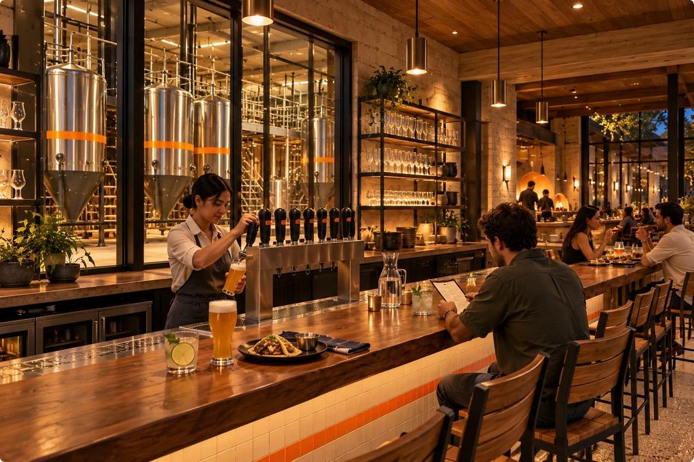

Chicken 65 Totopos
Our fusion take on South Indian Chicken 65, crisp spiced chicken designed to be eaten with fresh masa totopos.

Austin, Texas · A future place
A brewhouse around a shaded court, where fire cooks the food and fermentation makes the beer, and every dish is meant to be met by a beer and a zero-proof drink chosen for it.
VISION. NASHA is a concept in development. This is the place we are designing toward; nothing is built, cooked or brewed yet. Concept stage: there is no brewery, no restaurant, no truck and no menu for sale.
The idea
A restaurant often adds a beer list, or a brewery a food menu. NASHA is meant to start from the table: five dishes, five beers and a zero-proof drink for each, made to meet in the middle.
The vision is a design to aim at. The business view says what is real, what is assumed and what still needs proof.
Food
Chicken 65 on thick fried totopos. Charred paneer in a corn tortilla. Goat birria with a cup of consomme. Each is drawn here as it is meant to look; none has been cooked yet. All five dishes.
Our fusion take on South Indian Chicken 65, crisp spiced chicken designed to be eaten with fresh masa totopos.
Charred yogurt-marinated paneer with green salsa and pineapple, intended to stay tender in a corn tortilla.
Goat braised slowly in a chile adobo in a sealed pot, with a consommé to dip.
Beer
A soft Hefeweizen, an easy Mexican-style lager, a toasty Vienna amber, a crisp Pilsner and an aromatic Witbier, each poured into a glass that suits it. The zero-proof drinks use the same glasses, with the same care. Meet the beers.
Pairing
Every pairing is explained in a plain sentence, and always optional. Order what you like.
Goat birria with a soft, banana-and-clove Hefeweizen or a ruby hibiscus-and-tamarind tea. We expect both to cut the richness of the consomme.
These pairings are proposals. Nobody has tasted them yet. See all pairings.
The court
Stone, glass and shade. The tanks sit behind glass beside the court, so brewing is part of the evening. Walk in from the street.



Craft
The brewers, the cooks and the servers share one room. Steel you can see, fire you can feel, a table set simply. The craft and the table. One evening, start to finish.
How we are building it
The founder plans to test the food at home first, then cost it, before anything else is asked of anyone. The Lab shows where each dish really is. The business view shows what is real, what is assumed and what needs proof. Four minutes, start to finish.